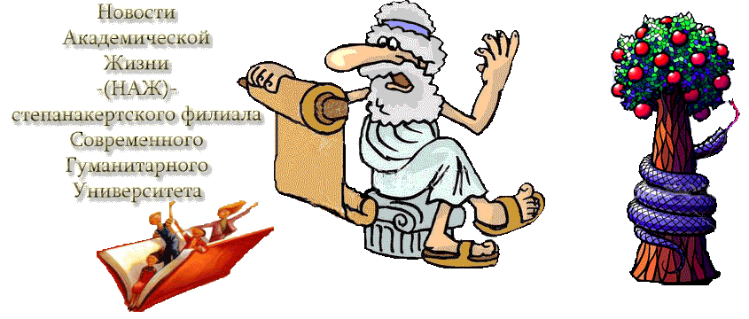

Хроники СГУ

Сверхсекретная информация:
Степ-ФИЛИАЛ-СГУ:
---140 предметов на 130 студентов;
---срок – 4 года (заочно 5 лет);
---плата за всё – $2,200
---адм-метод-тех сотрудников – 10;
---преподавателей – 23.
| Выпуски НАЖ: | ||||||||
|---|---|---|---|---|---|---|---|---|
| № 3 | № 4 | № 5 | № 6 | № 7 | № 8 | № 9 | № 10 | № 11 |
Выпуск № 5
12 ноября 2003
Неделя как все
Учебный процесс на этой недели шёл без особых сюрпризов и всплесков.
Будничная неделя, одна из многих на нашем жизненном пути.
Юристы второго курса не пришли на урок английского. Возможно, они потратили это время на великие подвиги и неимоверные приключения с наслаждениями. Молодцы!
Однако, отчёт о таких делах ищите в иных периодических изданиях типа "Отдохни!", "Караван истории", "Человек и закон", а у нас академическое издание со своим направлением где, увы, не всякое имя удостаивается упоминания.
По этой же причине и юристы первого курса в текущей неделе остались анонимным нулем.
Des absentes aut bene, aut nihil, как говорит прогулянная ими латынь.
Себя проявили студентами лишь несколько девушек второго экономисто-менеджерского курса.
В уроке изначально участвовали Лиана, Зарина и Алёна.
Лиана продержалась целых 4 предложения из упражнения первого, урока 1, юниты 6, потом сошла с дистанции. Но восхищает порыв Лианы.
Затем на арене появилась Сирана в сопровождении сестры и минуты три поражала окрестных присутствующих (урок шёл в беседке по причине солнечного дня) своим бойким small talk.
Великая вещь кураж!!
На этом высокие гостьи удалились.
Зарине последовала их примеру за пять минут до конца урока.
Алёна продержалась на все сто. В результате упражнения 1 и 2 из урока 1 юниты 6 были выполнены от доски до доски.
Поэтический вечер состоялся!
В четверг вечером аудитория 1 превратилась в романтический закапелок где звучали стихи известных российских поэтов в исполнении Ануш, Ларисы и г-жи Бадаловой.
Молодой поэт Александр исполнял собственные творения.
Помянули и прочли пару произведений улётного "Хохла".
В развернувшейся беседе затрагивались животрепещущие темы отношений между полами, наркомании и поэзии.
Приводились конкретные примеры из личных жизней.
Участники встречи пригрозились на следущий раз устроить вечер при свечах.
Salvete, amici!